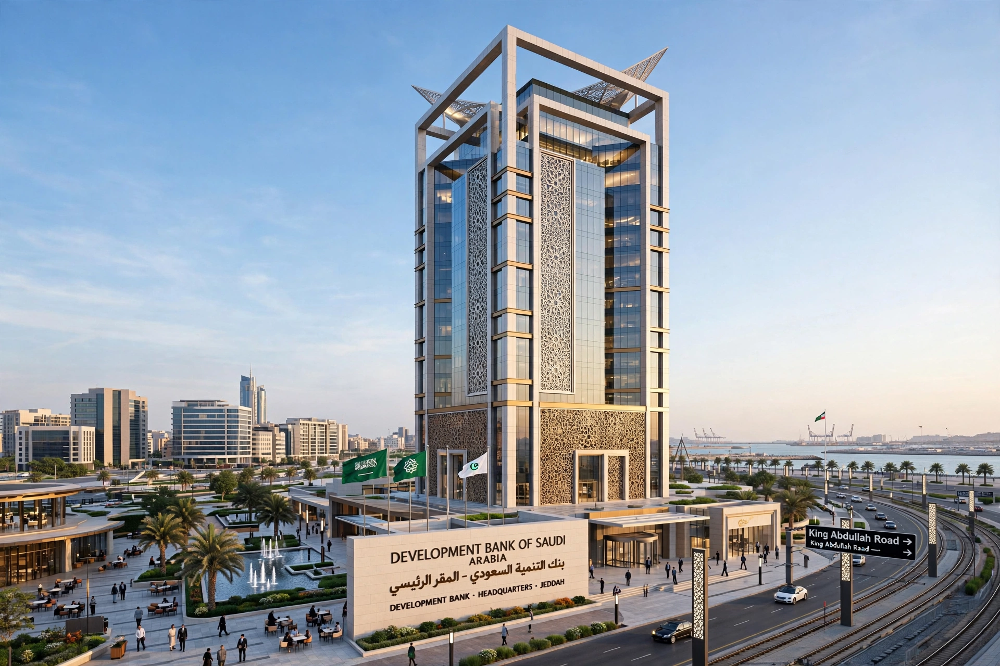

| Abbreviation | IsDB |
|---|---|
| Formation | 1975 (inaugural meeting 1976) |
| Type | Multilateral development bank |
| Headquarters | Jeddah, Saudi Arabia |
| Membership | 57 member countries |
| President | Muhammad Al Jasser |
| Parent organisation | Organisation of Islamic Cooperation |
The Islamic Development Bank (IsDB; Arabic: البنك الإسلامي للتنمية) is a multilateral development finance institution established by the member states of the Organisation of Islamic Cooperation (OIC). Headquartered in Jeddah, Saudi Arabia, it provides Sharia-compliant finance for economic development and social progress in its 57 member countries across the Muslim world and for Muslim communities in non-member countries.
The bank was proposed at the first conference of finance ministers of the OIC in Jeddah in 1973, in the wake of the oil boom, and formally established in 1975; its inaugural Board of Governors meeting was held in 1976. Saudi Arabia is the largest shareholder, and the IsDB Group expanded to include the Islamic Development Bank itself, the Islamic Corporation for the Development of the Private Sector (ICD), the International Islamic Trade Finance Corporation (ITFC), the Islamic Corporation for the Insurance of Investment and Export Credit (ICIEC) and the Islamic Research and Training Institute.
Because Islamic finance prohibits interest (riba), the bank finances projects through modes such as murabaha (cost-plus financing), ijara (leasing), istisna'a (construction financing) and sukuk (Islamic bonds); the IsDB is one of the largest issuers of highly rated sukuk. Cumulative approvals have exceeded US$170 billion, funding infrastructure, agriculture, health, education and trade, along with special assistance programmes and scholarships. The bank also manages funds for the annual qurbani (Adahi) sacrifice project in Mecca.